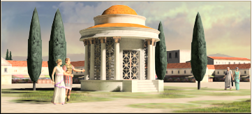
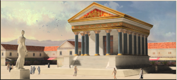
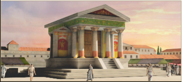
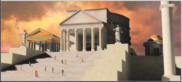

RTR: Imperium Surrectum
RTR: Imperium SurrectumShrine chain
5 levels, each replacing the one before it — you upgrade in place rather than building alongside.
Shrine → Temple → Large Temple → Awesome Temple → Pantheion
Pictures are the game's own building art. Where a culture ships none of its own, the game falls back to another culture's, and that is what is shown here.
Levels at a glance
| Level | Cost | Build time | Minimum settlement | Upgrades to | Level | Cost | Build time | Minimum settlement | Upgrades to | ||
|---|---|---|---|---|---|---|---|---|---|---|---|
| Shrine | 1,000 | 2 | town | Temple, requires, no_other_temple | Temple | 2,000 | 4 | large town | Large Temple, requires, no_other_large_temple | ||
| Large Temple | 6,000 | 6 | city | Awesome Temple, requires, no_other_awesome_temple | Awesome Temple | 9,000 | 9 | large city | Pantheion, requires, no_other_pantheon | ||
| Pantheion | 12,000 | 12 | huge city | — |
Costs in denarii, build time in turns.
Shrine

Religion also makes a people feel happy and content to know that the Gods are honoured.
| Cost | 1,000 denarii | Build time | 2 turns | Minimum settlement | town | Upgrades to | Temple, requires, no_other_temple |
What it does
- +1 public order (happiness)
- taxable income -5 to -1, scaling with settlement size (player only)
Show 52 effects that apply only in the circumstances shown
- +1 public order (happiness) — only when
majority_religion italic and faction_religion_italic - +1 public order (happiness) — only when
majority_religion germanic and faction_religion_germanic - +1 public order (happiness) — only when
majority_religion celtic and faction_religion_celtic - +1 public order (happiness) — only when
majority_religion thracian and faction_religion_thracian - +1 public order (happiness) — only when
majority_religion bithynian and faction_religion_bithynian - +1 public order (happiness) — only when
majority_religion paeonian and faction_religion_paeonian - +1 public order (happiness) — only when
majority_religion triballian and faction_religion_triballian - +1 public order (happiness) — only when
majority_religion scythian and faction_religion_scythian - +1 public order (happiness) — only when
majority_religion iberian and faction_religion_iberian - +1 public order (happiness) — only when
majority_religion illyrian and faction_religion_illyrian - +1 public order (happiness) — only when
majority_religion venetic and faction_religion_venetic - +1 public order (happiness) — only when
majority_religion liburnian and faction_religion_liburnian - +1 public order (happiness) — only when
majority_religion dardanian and faction_religion_dardanian - +1 public order (happiness) — only when
majority_religion delmato_pannonian and faction_religion_delmato_pannonian - +1 public order (happiness) — only when
majority_religion baltic and faction_religion_baltic - +1 public order (happiness) — only when
majority_religion libyan and faction_religion_libyan - +1 public order (happiness) — only when
majority_religion phoenician and faction_religion_phoenician - +1 public order (happiness) — only when
majority_religion carian and faction_religion_carian - +1 public order (happiness) — only when
majority_religion lycian and faction_religion_lycian - +1 public order (happiness) — only when
majority_religion pisidian and faction_religion_pisidian - +1 public order (happiness) — only when
majority_religion paphlagonian and faction_religion_paphlagonian - +1 public order (happiness) — only when
majority_religion cilician and faction_religion_cilician - +1 public order (happiness) — only when
majority_religion cappadocian and faction_religion_cappadocian - +1 public order (happiness) — only when
majority_religion assyrian and faction_religion_assyrian - +1 public order (happiness) — only when
majority_religion mesopotamian and faction_religion_mesopotamian - +1 public order (happiness) — only when
majority_religion judaean and faction_religion_judaean - +1 public order (happiness) — only when
majority_religion egyptian and faction_religion_egyptian - +1 public order (happiness) — only when
majority_religion ethiopian and faction_religion_ethiopian - +1 public order (happiness) — only when
majority_religion arab and faction_religion_arab - +1 public order (happiness) — only when
majority_religion caucasian and faction_religion_caucasian - +1 public order (happiness) — only when
majority_religion armenian and faction_religion_armenian - +1 public order (happiness) — only when
majority_religion iranian and faction_religion_iranian - +1 public order (happiness) — only when
majority_religion indian and faction_religion_indian - +1 public order (happiness) — only when
majority_religion dorian and faction_religion_dorian - +1 public order (happiness) — only when
majority_religion ionian and faction_religion_ionian - +1 public order (happiness) — only when
majority_religion arcadian and faction_religion_arcadian - +1 public order (happiness) — only when
majority_religion aeolian and faction_religion_aeolian - +1 public order (happiness) — only when
majority_religion northwest_greek and faction_religion_northwest_greek - +1 public order (happiness) — only when
majority_religion epirote and faction_religion_epirote - +1 public order (happiness) — only when
majority_religion greco_bactrian and faction_religion_greco_bactrian - +1 public order (happiness) — only when
majority_religion macedonian and faction_religion_macedonian - +1 public order (happiness) — only when
majority_religion bosporan and faction_religion_bosporan - -1 taxable income — only when
size1 and building_present_min_level temples_standard shrine and not is_player - -1 taxable income — only when
size2 and building_present_min_level temples_standard shrine and not is_player - -2 taxable income — only when
size3 and building_present_min_level temples_standard shrine and not is_player - -2 taxable income — only when
size4 and building_present_min_level temples_standard shrine and not is_player - -3 taxable income — only when
size5 and building_present_min_level temples_standard shrine and not is_player - -3 taxable income — only when
size6 and building_present_min_level temples_standard shrine and not is_player - -4 taxable income — only when
size7 and building_present_min_level temples_standard shrine and not is_player - -4 taxable income — only when
size8 and building_present_min_level temples_standard shrine and not is_player - -5 taxable income — only when
size9 and building_present_min_level temples_standard shrine and not is_player - -5 taxable income — only when
size10 and building_present_min_level temples_standard shrine and not is_player
Religious belief — spreads 42 beliefs, by how much depending on what the region already believes.
Show the 42 beliefs
- Aeolian +2
- Arab +2
- Arcadian +2
- Armenian +2
- Assyrian +2
- Baltic +2
- Bithynian +2
- Bosporan +2
- Cappadocian +2
- Carian +2
- Caucasian +2
- Celtic +2
- Cilician +2
- Dardanian +2
- delmato_pannonian (no name in the text files) +2
- Dorian +2
- Egyptian +2
- Epirote +2
- Ethiopian +2
- Germanic +2
- Greco-Bactrian +2
- Iberian +2
- Illyrian +2
- Indian +2
- Ionian +2
- Iranian +2
- Italic +2
- Judaean +2
- Liburnian +2
- Libyan +2
- Lycian +2
- Macedonian +2
- Mesopotamian +2
- Northwest Greek +2
- Paeonian +2
- Paphlagonian +2
- Phoenician +2
- Pisidian +2
- Scythian +2
- Thracian +2
- Triballian +2
- Venetic +2
Large Temple

Religion also makes a people feel happy and content to know that the Gods are honoured.
| Cost | 6,000 denarii | Build time | 6 turns | Minimum settlement | city | Upgrades to | Awesome Temple, requires, no_other_awesome_temple |
What it does
- +5 public order (happiness)
- can stage games
- taxable income -7 to -3, scaling with settlement size (player only)
Show 52 effects that apply only in the circumstances shown
- +1 public order (happiness) — only when
majority_religion italic and faction_religion_italic - +1 public order (happiness) — only when
majority_religion germanic and faction_religion_germanic - +1 public order (happiness) — only when
majority_religion celtic and faction_religion_celtic - +1 public order (happiness) — only when
majority_religion thracian and faction_religion_thracian - +1 public order (happiness) — only when
majority_religion bithynian and faction_religion_bithynian - +1 public order (happiness) — only when
majority_religion paeonian and faction_religion_paeonian - +1 public order (happiness) — only when
majority_religion triballian and faction_religion_triballian - +1 public order (happiness) — only when
majority_religion scythian and faction_religion_scythian - +1 public order (happiness) — only when
majority_religion iberian and faction_religion_iberian - +1 public order (happiness) — only when
majority_religion illyrian and faction_religion_illyrian - +1 public order (happiness) — only when
majority_religion venetic and faction_religion_venetic - +1 public order (happiness) — only when
majority_religion liburnian and faction_religion_liburnian - +1 public order (happiness) — only when
majority_religion dardanian and faction_religion_dardanian - +1 public order (happiness) — only when
majority_religion delmato_pannonian and faction_religion_delmato_pannonian - +1 public order (happiness) — only when
majority_religion baltic and faction_religion_baltic - +1 public order (happiness) — only when
majority_religion libyan and faction_religion_libyan - +1 public order (happiness) — only when
majority_religion phoenician and faction_religion_phoenician - +1 public order (happiness) — only when
majority_religion carian and faction_religion_carian - +1 public order (happiness) — only when
majority_religion lycian and faction_religion_lycian - +1 public order (happiness) — only when
majority_religion pisidian and faction_religion_pisidian - +1 public order (happiness) — only when
majority_religion paphlagonian and faction_religion_paphlagonian - +1 public order (happiness) — only when
majority_religion cilician and faction_religion_cilician - +1 public order (happiness) — only when
majority_religion cappadocian and faction_religion_cappadocian - +1 public order (happiness) — only when
majority_religion assyrian and faction_religion_assyrian - +1 public order (happiness) — only when
majority_religion mesopotamian and faction_religion_mesopotamian - +1 public order (happiness) — only when
majority_religion judaean and faction_religion_judaean - +1 public order (happiness) — only when
majority_religion egyptian and faction_religion_egyptian - +1 public order (happiness) — only when
majority_religion ethiopian and faction_religion_ethiopian - +1 public order (happiness) — only when
majority_religion arab and faction_religion_arab - +1 public order (happiness) — only when
majority_religion caucasian and faction_religion_caucasian - +1 public order (happiness) — only when
majority_religion armenian and faction_religion_armenian - +1 public order (happiness) — only when
majority_religion iranian and faction_religion_iranian - +1 public order (happiness) — only when
majority_religion indian and faction_religion_indian - +1 public order (happiness) — only when
majority_religion dorian and faction_religion_dorian - +1 public order (happiness) — only when
majority_religion ionian and faction_religion_ionian - +1 public order (happiness) — only when
majority_religion arcadian and faction_religion_arcadian - +1 public order (happiness) — only when
majority_religion aeolian and faction_religion_aeolian - +1 public order (happiness) — only when
majority_religion northwest_greek and faction_religion_northwest_greek - +1 public order (happiness) — only when
majority_religion epirote and faction_religion_epirote - +1 public order (happiness) — only when
majority_religion greco_bactrian and faction_religion_greco_bactrian - +1 public order (happiness) — only when
majority_religion macedonian and faction_religion_macedonian - +1 public order (happiness) — only when
majority_religion bosporan and faction_religion_bosporan - -3 taxable income — only when
size1 and building_present_min_level temples_standard large_temple and not is_player - -3 taxable income — only when
size2 and building_present_min_level temples_standard large_temple and not is_player - -4 taxable income — only when
size3 and building_present_min_level temples_standard large_temple and not is_player - -4 taxable income — only when
size4 and building_present_min_level temples_standard large_temple and not is_player - -5 taxable income — only when
size5 and building_present_min_level temples_standard large_temple and not is_player - -5 taxable income — only when
size6 and building_present_min_level temples_standard large_temple and not is_player - -6 taxable income — only when
size7 and building_present_min_level temples_standard large_temple and not is_player - -6 taxable income — only when
size8 and building_present_min_level temples_standard large_temple and not is_player - -7 taxable income — only when
size9 and building_present_min_level temples_standard large_temple and not is_player - -7 taxable income — only when
size10 and building_present_min_level temples_standard large_temple and not is_player
Religious belief — spreads 42 beliefs, by how much depending on what the region already believes.
Show the 42 beliefs
- Aeolian +6
- Arab +6
- Arcadian +6
- Armenian +6
- Assyrian +6
- Baltic +6
- Bithynian +6
- Bosporan +6
- Cappadocian +6
- Carian +6
- Caucasian +6
- Celtic +6
- Cilician +6
- Dardanian +6
- delmato_pannonian (no name in the text files) +6
- Dorian +6
- Egyptian +6
- Epirote +6
- Ethiopian +6
- Germanic +6
- Greco-Bactrian +6
- Iberian +6
- Illyrian +6
- Indian +6
- Ionian +6
- Iranian +6
- Italic +6
- Judaean +6
- Liburnian +6
- Libyan +6
- Lycian +6
- Macedonian +6
- Mesopotamian +6
- Northwest Greek +6
- Paeonian +6
- Paphlagonian +6
- Phoenician +6
- Pisidian +6
- Scythian +6
- Thracian +6
- Triballian +6
- Venetic +6
Temple

Religion also makes a people feel happy and content to know that the Gods are honoured.
| Cost | 2,000 denarii | Build time | 4 turns | Minimum settlement | large town | Upgrades to | Large Temple, requires, no_other_large_temple |
What it does
- +3 public order (happiness)
- taxable income -6 to -2, scaling with settlement size (player only)
Show 52 effects that apply only in the circumstances shown
- +1 public order (happiness) — only when
majority_religion italic and faction_religion_italic - +1 public order (happiness) — only when
majority_religion germanic and faction_religion_germanic - +1 public order (happiness) — only when
majority_religion celtic and faction_religion_celtic - +1 public order (happiness) — only when
majority_religion thracian and faction_religion_thracian - +1 public order (happiness) — only when
majority_religion bithynian and faction_religion_bithynian - +1 public order (happiness) — only when
majority_religion paeonian and faction_religion_paeonian - +1 public order (happiness) — only when
majority_religion triballian and faction_religion_triballian - +1 public order (happiness) — only when
majority_religion scythian and faction_religion_scythian - +1 public order (happiness) — only when
majority_religion iberian and faction_religion_iberian - +1 public order (happiness) — only when
majority_religion illyrian and faction_religion_illyrian - +1 public order (happiness) — only when
majority_religion venetic and faction_religion_venetic - +1 public order (happiness) — only when
majority_religion liburnian and faction_religion_liburnian - +1 public order (happiness) — only when
majority_religion dardanian and faction_religion_dardanian - +1 public order (happiness) — only when
majority_religion delmato_pannonian and faction_religion_delmato_pannonian - +1 public order (happiness) — only when
majority_religion baltic and faction_religion_baltic - +1 public order (happiness) — only when
majority_religion libyan and faction_religion_libyan - +1 public order (happiness) — only when
majority_religion phoenician and faction_religion_phoenician - +1 public order (happiness) — only when
majority_religion carian and faction_religion_carian - +1 public order (happiness) — only when
majority_religion lycian and faction_religion_lycian - +1 public order (happiness) — only when
majority_religion pisidian and faction_religion_pisidian - +1 public order (happiness) — only when
majority_religion paphlagonian and faction_religion_paphlagonian - +1 public order (happiness) — only when
majority_religion cilician and faction_religion_cilician - +1 public order (happiness) — only when
majority_religion cappadocian and faction_religion_cappadocian - +1 public order (happiness) — only when
majority_religion assyrian and faction_religion_assyrian - +1 public order (happiness) — only when
majority_religion mesopotamian and faction_religion_mesopotamian - +1 public order (happiness) — only when
majority_religion judaean and faction_religion_judaean - +1 public order (happiness) — only when
majority_religion egyptian and faction_religion_egyptian - +1 public order (happiness) — only when
majority_religion ethiopian and faction_religion_ethiopian - +1 public order (happiness) — only when
majority_religion arab and faction_religion_arab - +1 public order (happiness) — only when
majority_religion caucasian and faction_religion_caucasian - +1 public order (happiness) — only when
majority_religion armenian and faction_religion_armenian - +1 public order (happiness) — only when
majority_religion iranian and faction_religion_iranian - +1 public order (happiness) — only when
majority_religion indian and faction_religion_indian - +1 public order (happiness) — only when
majority_religion dorian and faction_religion_dorian - +1 public order (happiness) — only when
majority_religion ionian and faction_religion_ionian - +1 public order (happiness) — only when
majority_religion arcadian and faction_religion_arcadian - +1 public order (happiness) — only when
majority_religion aeolian and faction_religion_aeolian - +1 public order (happiness) — only when
majority_religion northwest_greek and faction_religion_northwest_greek - +1 public order (happiness) — only when
majority_religion epirote and faction_religion_epirote - +1 public order (happiness) — only when
majority_religion greco_bactrian and faction_religion_greco_bactrian - +1 public order (happiness) — only when
majority_religion macedonian and faction_religion_macedonian - +1 public order (happiness) — only when
majority_religion bosporan and faction_religion_bosporan - -2 taxable income — only when
size1 and building_present_min_level temples_standard temple and not is_player - -2 taxable income — only when
size2 and building_present_min_level temples_standard temple and not is_player - -3 taxable income — only when
size3 and building_present_min_level temples_standard temple and not is_player - -3 taxable income — only when
size4 and building_present_min_level temples_standard temple and not is_player - -4 taxable income — only when
size5 and building_present_min_level temples_standard temple and not is_player - -4 taxable income — only when
size6 and building_present_min_level temples_standard temple and not is_player - -5 taxable income — only when
size7 and building_present_min_level temples_standard temple and not is_player - -5 taxable income — only when
size8 and building_present_min_level temples_standard temple and not is_player - -6 taxable income — only when
size9 and building_present_min_level temples_standard temple and not is_player - -6 taxable income — only when
size10 and building_present_min_level temples_standard temple and not is_player
Religious belief — spreads 42 beliefs, by how much depending on what the region already believes.
Show the 42 beliefs
- Aeolian +4
- Arab +4
- Arcadian +4
- Armenian +4
- Assyrian +4
- Baltic +4
- Bithynian +4
- Bosporan +4
- Cappadocian +4
- Carian +4
- Caucasian +4
- Celtic +4
- Cilician +4
- Dardanian +4
- delmato_pannonian (no name in the text files) +4
- Dorian +4
- Egyptian +4
- Epirote +4
- Ethiopian +4
- Germanic +4
- Greco-Bactrian +4
- Iberian +4
- Illyrian +4
- Indian +4
- Ionian +4
- Iranian +4
- Italic +4
- Judaean +4
- Liburnian +4
- Libyan +4
- Lycian +4
- Macedonian +4
- Mesopotamian +4
- Northwest Greek +4
- Paeonian +4
- Paphlagonian +4
- Phoenician +4
- Pisidian +4
- Scythian +4
- Thracian +4
- Triballian +4
- Venetic +4
Awesome Temple

Religion also makes a people feel happy and content to know that the Gods are honoured.
| Cost | 9,000 denarii | Build time | 9 turns | Minimum settlement | large city | Upgrades to | Pantheion, requires, no_other_pantheon |
What it does
- +6 public order (happiness)
- can stage games
- taxable income -8 to -4, scaling with settlement size (player only)
Show 52 effects that apply only in the circumstances shown
- +2 public order (happiness) — only when
majority_religion italic and faction_religion_italic - +2 public order (happiness) — only when
majority_religion germanic and faction_religion_germanic - +2 public order (happiness) — only when
majority_religion celtic and faction_religion_celtic - +2 public order (happiness) — only when
majority_religion thracian and faction_religion_thracian - +2 public order (happiness) — only when
majority_religion bithynian and faction_religion_bithynian - +2 public order (happiness) — only when
majority_religion paeonian and faction_religion_paeonian - +2 public order (happiness) — only when
majority_religion triballian and faction_religion_triballian - +2 public order (happiness) — only when
majority_religion scythian and faction_religion_scythian - +2 public order (happiness) — only when
majority_religion iberian and faction_religion_iberian - +2 public order (happiness) — only when
majority_religion illyrian and faction_religion_illyrian - +2 public order (happiness) — only when
majority_religion venetic and faction_religion_venetic - +2 public order (happiness) — only when
majority_religion liburnian and faction_religion_liburnian - +2 public order (happiness) — only when
majority_religion dardanian and faction_religion_dardanian - +2 public order (happiness) — only when
majority_religion delmato_pannonian and faction_religion_delmato_pannonian - +2 public order (happiness) — only when
majority_religion baltic and faction_religion_baltic - +2 public order (happiness) — only when
majority_religion libyan and faction_religion_libyan - +2 public order (happiness) — only when
majority_religion phoenician and faction_religion_phoenician - +2 public order (happiness) — only when
majority_religion carian and faction_religion_carian - +2 public order (happiness) — only when
majority_religion lycian and faction_religion_lycian - +2 public order (happiness) — only when
majority_religion pisidian and faction_religion_pisidian - +2 public order (happiness) — only when
majority_religion paphlagonian and faction_religion_paphlagonian - +2 public order (happiness) — only when
majority_religion cilician and faction_religion_cilician - +2 public order (happiness) — only when
majority_religion cappadocian and faction_religion_cappadocian - +2 public order (happiness) — only when
majority_religion assyrian and faction_religion_assyrian - +2 public order (happiness) — only when
majority_religion mesopotamian and faction_religion_mesopotamian - +2 public order (happiness) — only when
majority_religion judaean and faction_religion_judaean - +2 public order (happiness) — only when
majority_religion egyptian and faction_religion_egyptian - +2 public order (happiness) — only when
majority_religion ethiopian and faction_religion_ethiopian - +2 public order (happiness) — only when
majority_religion arab and faction_religion_arab - +2 public order (happiness) — only when
majority_religion caucasian and faction_religion_caucasian - +2 public order (happiness) — only when
majority_religion armenian and faction_religion_armenian - +2 public order (happiness) — only when
majority_religion iranian and faction_religion_iranian - +2 public order (happiness) — only when
majority_religion indian and faction_religion_indian - +2 public order (happiness) — only when
majority_religion dorian and faction_religion_dorian - +2 public order (happiness) — only when
majority_religion ionian and faction_religion_ionian - +2 public order (happiness) — only when
majority_religion arcadian and faction_religion_arcadian - +2 public order (happiness) — only when
majority_religion aeolian and faction_religion_aeolian - +2 public order (happiness) — only when
majority_religion northwest_greek and faction_religion_northwest_greek - +2 public order (happiness) — only when
majority_religion epirote and faction_religion_epirote - +2 public order (happiness) — only when
majority_religion greco_bactrian and faction_religion_greco_bactrian - +2 public order (happiness) — only when
majority_religion macedonian and faction_religion_macedonian - +2 public order (happiness) — only when
majority_religion bosporan and faction_religion_bosporan - -4 taxable income — only when
size1 and building_present_min_level temples_standard awesome_temple and not is_player - -4 taxable income — only when
size2 and building_present_min_level temples_standard awesome_temple and not is_player - -5 taxable income — only when
size3 and building_present_min_level temples_standard awesome_temple and not is_player - -5 taxable income — only when
size4 and building_present_min_level temples_standard awesome_temple and not is_player - -6 taxable income — only when
size5 and building_present_min_level temples_standard awesome_temple and not is_player - -6 taxable income — only when
size6 and building_present_min_level temples_standard awesome_temple and not is_player - -7 taxable income — only when
size7 and building_present_min_level temples_standard awesome_temple and not is_player - -7 taxable income — only when
size8 and building_present_min_level temples_standard awesome_temple and not is_player - -8 taxable income — only when
size9 and building_present_min_level temples_standard awesome_temple and not is_player - -8 taxable income — only when
size10 and building_present_min_level temples_standard awesome_temple and not is_player
Religious belief — spreads 42 beliefs, by how much depending on what the region already believes.
Show the 42 beliefs
- Aeolian +8
- Arab +8
- Arcadian +8
- Armenian +8
- Assyrian +8
- Baltic +8
- Bithynian +8
- Bosporan +8
- Cappadocian +8
- Carian +8
- Caucasian +8
- Celtic +8
- Cilician +8
- Dardanian +8
- delmato_pannonian (no name in the text files) +8
- Dorian +8
- Egyptian +8
- Epirote +8
- Ethiopian +8
- Germanic +8
- Greco-Bactrian +8
- Iberian +8
- Illyrian +8
- Indian +8
- Ionian +8
- Iranian +8
- Italic +8
- Judaean +8
- Liburnian +8
- Libyan +8
- Lycian +8
- Macedonian +8
- Mesopotamian +8
- Northwest Greek +8
- Paeonian +8
- Paphlagonian +8
- Phoenician +8
- Pisidian +8
- Scythian +8
- Thracian +8
- Triballian +8
- Venetic +8
Pantheion

Religion also makes a people feel happy and content to know that the Gods are honoured.
| Cost | 12,000 denarii | Build time | 12 turns | Minimum settlement | huge city |
What it does
- +8 public order (happiness)
- can stage games
- taxable income -10 to -5, scaling with settlement size (player only)
Show 52 effects that apply only in the circumstances shown
- +2 public order (happiness) — only when
majority_religion italic and faction_religion_italic - +2 public order (happiness) — only when
majority_religion germanic and faction_religion_germanic - +2 public order (happiness) — only when
majority_religion celtic and faction_religion_celtic - +2 public order (happiness) — only when
majority_religion thracian and faction_religion_thracian - +2 public order (happiness) — only when
majority_religion bithynian and faction_religion_bithynian - +2 public order (happiness) — only when
majority_religion paeonian and faction_religion_paeonian - +2 public order (happiness) — only when
majority_religion triballian and faction_religion_triballian - +2 public order (happiness) — only when
majority_religion scythian and faction_religion_scythian - +2 public order (happiness) — only when
majority_religion iberian and faction_religion_iberian - +2 public order (happiness) — only when
majority_religion illyrian and faction_religion_illyrian - +2 public order (happiness) — only when
majority_religion venetic and faction_religion_venetic - +2 public order (happiness) — only when
majority_religion liburnian and faction_religion_liburnian - +2 public order (happiness) — only when
majority_religion dardanian and faction_religion_dardanian - +2 public order (happiness) — only when
majority_religion delmato_pannonian and faction_religion_delmato_pannonian - +2 public order (happiness) — only when
majority_religion baltic and faction_religion_baltic - +2 public order (happiness) — only when
majority_religion libyan and faction_religion_libyan - +2 public order (happiness) — only when
majority_religion phoenician and faction_religion_phoenician - +2 public order (happiness) — only when
majority_religion carian and faction_religion_carian - +2 public order (happiness) — only when
majority_religion lycian and faction_religion_lycian - +2 public order (happiness) — only when
majority_religion pisidian and faction_religion_pisidian - +2 public order (happiness) — only when
majority_religion paphlagonian and faction_religion_paphlagonian - +2 public order (happiness) — only when
majority_religion cilician and faction_religion_cilician - +2 public order (happiness) — only when
majority_religion cappadocian and faction_religion_cappadocian - +2 public order (happiness) — only when
majority_religion assyrian and faction_religion_assyrian - +2 public order (happiness) — only when
majority_religion mesopotamian and faction_religion_mesopotamian - +2 public order (happiness) — only when
majority_religion judaean and faction_religion_judaean - +2 public order (happiness) — only when
majority_religion egyptian and faction_religion_egyptian - +2 public order (happiness) — only when
majority_religion ethiopian and faction_religion_ethiopian - +2 public order (happiness) — only when
majority_religion arab and faction_religion_arab - +2 public order (happiness) — only when
majority_religion caucasian and faction_religion_caucasian - +2 public order (happiness) — only when
majority_religion armenian and faction_religion_armenian - +2 public order (happiness) — only when
majority_religion iranian and faction_religion_iranian - +2 public order (happiness) — only when
majority_religion indian and faction_religion_indian - +2 public order (happiness) — only when
majority_religion dorian and faction_religion_dorian - +2 public order (happiness) — only when
majority_religion ionian and faction_religion_ionian - +2 public order (happiness) — only when
majority_religion arcadian and faction_religion_arcadian - +2 public order (happiness) — only when
majority_religion aeolian and faction_religion_aeolian - +2 public order (happiness) — only when
majority_religion northwest_greek and faction_religion_northwest_greek - +2 public order (happiness) — only when
majority_religion epirote and faction_religion_epirote - +2 public order (happiness) — only when
majority_religion greco_bactrian and faction_religion_greco_bactrian - +2 public order (happiness) — only when
majority_religion macedonian and faction_religion_macedonian - +2 public order (happiness) — only when
majority_religion bosporan and faction_religion_bosporan - -5 taxable income — only when
size1 and building_present_min_level temples_standard pantheon and not is_player - -6 taxable income — only when
size2 and building_present_min_level temples_standard pantheon and not is_player - -6 taxable income — only when
size3 and building_present_min_level temples_standard pantheon and not is_player - -7 taxable income — only when
size4 and building_present_min_level temples_standard pantheon and not is_player - -7 taxable income — only when
size5 and building_present_min_level temples_standard pantheon and not is_player - -8 taxable income — only when
size6 and building_present_min_level temples_standard pantheon and not is_player - -8 taxable income — only when
size7 and building_present_min_level temples_standard pantheon and not is_player - -9 taxable income — only when
size8 and building_present_min_level temples_standard pantheon and not is_player - -9 taxable income — only when
size9 and building_present_min_level temples_standard pantheon and not is_player - -10 taxable income — only when
size10 and building_present_min_level temples_standard pantheon and not is_player
Religious belief — spreads 42 beliefs, by how much depending on what the region already believes.
Show the 42 beliefs
- Aeolian +10
- Arab +10
- Arcadian +10
- Armenian +10
- Assyrian +10
- Baltic +10
- Bithynian +10
- Bosporan +10
- Cappadocian +10
- Carian +10
- Caucasian +10
- Celtic +10
- Cilician +10
- Dardanian +10
- delmato_pannonian (no name in the text files) +10
- Dorian +10
- Egyptian +10
- Epirote +10
- Ethiopian +10
- Germanic +10
- Greco-Bactrian +10
- Iberian +10
- Illyrian +10
- Indian +10
- Ionian +10
- Iranian +10
- Italic +10
- Judaean +10
- Liburnian +10
- Libyan +10
- Lycian +10
- Macedonian +10
- Mesopotamian +10
- Northwest Greek +10
- Paeonian +10
- Paphlagonian +10
- Phoenician +10
- Pisidian +10
- Scythian +10
- Thracian +10
- Triballian +10
- Venetic +10
What the shorthands in those conditions stand for (55)
These are the mod's own, quoted from the game files unchanged.
| Shorthand | Stands for | Shorthand | Stands for | Shorthand | Stands for |
|---|---|---|---|---|---|
faction_religion_aeolian | factions { boeotia, thessaly, } | faction_religion_arab | factions { nabataea, saba, thamud, lihyan, minaeans, qataban, himyar, hadhramaut, gerrha, palmyra, } | faction_religion_arcadian | factions { megalopolis, } |
faction_religion_armenian | factions { armenia, armenia_minor, sophene, commagene, } | faction_religion_assyrian | factions { osrhoene, } | faction_religion_baltic | factions { venedae, } |
faction_religion_bithynian | factions { bithynia, } | faction_religion_bosporan | factions { bosporan, } | faction_religion_cappadocian | factions { cappadocia, pontus, } |
faction_religion_carian | factions { chrysaoria, } | faction_religion_caucasian | factions { heniochi, mossynoeci, colchians, iberians, albanians, } | faction_religion_celtic | any one of 1 alternatives — too long to quote here |
faction_religion_cilician | factions { cilicians, } | faction_religion_dardanian | factions { dardania, } | faction_religion_delmato_pannonian | factions { iapodes, delmatae, daesitiates, } |
faction_religion_dorian | factions { acarnania, achaea, acragas, argos, byzantium, chersonesus, gortyn, heraclea_pontica, issa, knossos, kydonia, lyttos, messene, rhodes, sparta, syracuse, taras, } | faction_religion_egyptian | factions { egypt, } | faction_religion_epirote | factions { epirus, } |
faction_religion_ethiopian | factions { kush, axum, timbuktu, } | faction_religion_germanic | factions { chatti, cimbri, lugii, suebi, sugambri, frisii, chauci, cherusci, gauts, bastarnae, langobardi, marcomanni, quadi, hermunduri, } | faction_religion_greco_bactrian | factions { bactria, } |
faction_religion_iberian | factions { edeta, basti, ilici, ilergetes, lacetani, oretani, asta, carmo, arse, } | faction_religion_illyrian | factions { ardiaei, labeatae, illyrian_kingdom, } | faction_religion_indian | factions { mauryan, } |
faction_religion_ionian | factions { athens, chios, cius, cyzicus, emporion, histria, massalia, miletus, olbia, pentapolis, priene, sinope, trapezus, } | faction_religion_iranian | factions { atropatene, parni, osrhoene, persis, } | faction_religion_italic | factions { roman, volsinii, picentes, sarsinates, capua, samnites, lucanians, messapians, bruttians, italics, mamertines, sardinians, romans_julii, roman_rebels_1, roman_rebels_2, roman_senate, } |
faction_religion_judaean | factions { hasmonean, } | faction_religion_liburnian | factions { liburni, } | faction_religion_libyan | factions { masaesyli, massylii, mauri, musulamii, garamantes, nasamones, libyans, } |
faction_religion_lycian | factions { lycia, } | faction_religion_macedonian | factions { antigonid, cyrene, lysiad, pergamon, ptolemaic, ptolemaic_rebels, seleucid, seleucid_rebels, seleucid_rebels2, } | faction_religion_mesopotamian | factions { characene, } |
faction_religion_northwest_greek | factions { aetolia, elis, } | faction_religion_paeonian | factions { paeonia, } | faction_religion_paphlagonian | factions { paphlagonia, } |
faction_religion_phoenician | factions { carthage, arados, tyre, gades, sidon, } | faction_religion_pisidian | factions { selge, } | faction_religion_scythian | factions { saka, siraces, royal_scythians, royal_sarmatians, aorsi, iazyges, rhoxolani, arshi, kucha, chorasmia, } |
faction_religion_thracian | factions { asti, dentheletae, getae, cabyle, maedi, odrysians, bessi, costoboci, buri, crobyzi, tyragetae, } | faction_religion_triballian | factions { triballi, } | faction_religion_venetic | factions { histri, veneti, } |
large_temple | building_present_min_level temples_standard large_temple | shrine | building_present_min_level temples_standard shrine | size1 | major_event "empire_size1" |
size10 | major_event "empire_size10" | size2 | major_event "empire_size2" | size3 | major_event "empire_size3" |
size4 | major_event "empire_size4" | size5 | major_event "empire_size5" | size6 | major_event "empire_size6" |
size7 | major_event "empire_size7" | size8 | major_event "empire_size8" | size9 | major_event "empire_size9" |
temple | building_present_min_level temples_standard temple |